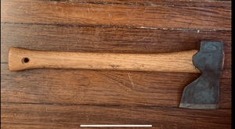
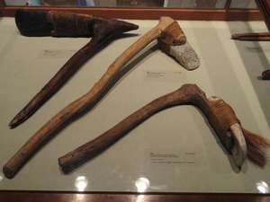
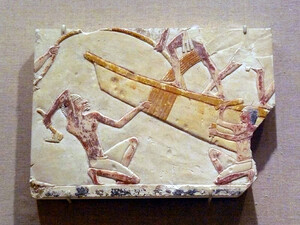

ⲉⲓⲛⲉ S, ⲓⲛⲓ B nn f, carpenter's axe, adze: Is 44 12 SB σκέπαρνον, ShZ 637 S branches cut with ⲕⲉⲗⲉⲃⲓⲛ or ⲉⲓ. (opp ⲡⲉⲛⲕⲁ ⲛⲥⲗⲟϭⲗⲉϭ), Ryl 239 S ⲉⲓ. ⲛϩⲁⲙϣⲉ (cf ib ⲕⲉⲗ. ⲛⲉⲕⲱⲧ), Ep 547 S ⲉⲓ ⲛϩⲁⲙ, CO 468 S in list of tools.V Rec 39 165.
(noun feminine)
tool
carpenter's axe, adze [σκεπαρνον]



1: carpenter's axe, 2: adze
complete
81a
See also:
Homonyms:
| view | plural: ϭⲗⲓⲗ S | (noun) axe2541 |
| view | ⲙⲁϫⲉ S ⲙⲁϫⲓ, ⲙⲁϣⲓ B | (noun masculine) axe, pick [λαξευτηριον]1163 |
| view | ⲕⲉⲗⲉⲃⲓⲛ SBF ⲕⲉⲗⲁⲃⲓⲛ, ⲕⲁⲗⲁⲃⲓⲛ S | (noun masculine) axe, pickaxe [πελεκυς, πελυξ]784 |
Homonyms:
| view | ⲉⲓⲛⲉ, ⲓⲛⲉ S ⲓⲛⲓ B | (noun feminine) thumb
great toe723 |